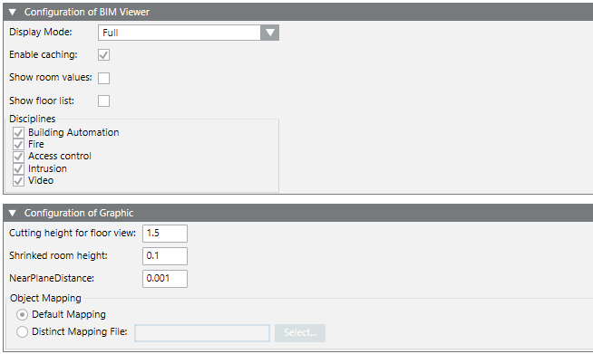

Configuration Expander

BIM Viewer Configuration | |
NOTE: The properties apply to the entire BIM project. | |
Display mode | Full: Recalculates all the graphic objects as soon as the cursor is moved. Requires a lot of RAM. Optimized: Graphic objects are not calculated within a building in the overview. In the floor view, only those graphic objects are calculated that are located on this floor. This procedure significantly reduces computer power. |
Enable caching | The BIM data is saved temporary if the check box is selected to quickly form the image. The cache is updated with <Alt> + <Home>. |
Display room values | If enabled, the room value box is displayed when opening the floor overview. Room value display can show or hide the box at any time. |
Show floor list | If enabled, the floor list is displayed when opening the floor overview. Floor list window can show or hide the list at any time. |
Disciplines | If enabled, the disciplines Building automation and control, Fire, Access control, Intrusion, Video can be individually enabled. |
Graphic configuration | |
NOTE: The properties apply to just a single graphic page. | |
Reduce cutting height for floor view | This value indicates the height (in meters) above the level of the lower floor that has a cut out of a floor in the floor view. All rooms are cut to the same height. |
Reduced room height | The system adds "shrinked room" objects when selecting the room colors. Depending on the concept of the BIM model, some rooms include floors while other do not. A selected / color room is not visible if a room does include the floor and the floor is thicker than the "shrunken room height". You must increase this number, for example, if no shaded pattern can be seen when selecting a room. |
Level distance | This is a special value that normally is not changed. Changing the value can be helpful if the surface of some BIM elements "flicker" when moving/turning the model. |
Object association | Default association As 1st default, the ProductMapping_HQ.csv file is used to associate BIM models and Desigo CC objects. As the second default, the ProductMapping.csv file, if available Project association file: A specific ProductMapping_Graphic_page.csv file used only for this site. |